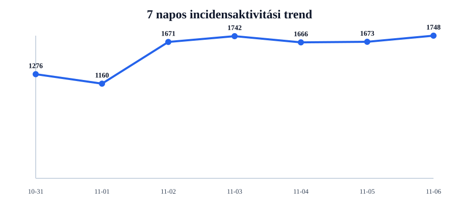
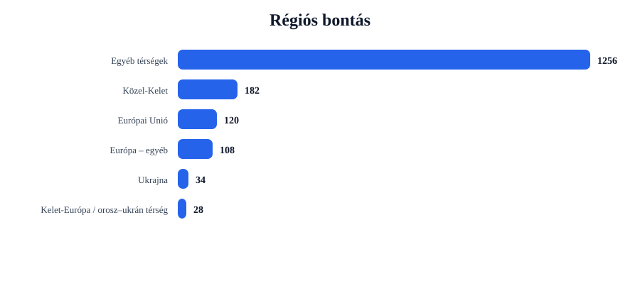
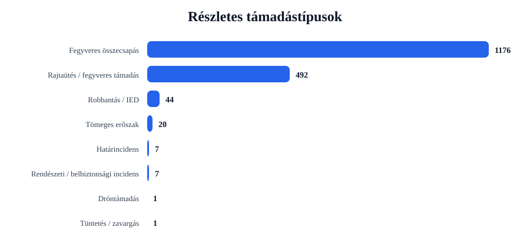
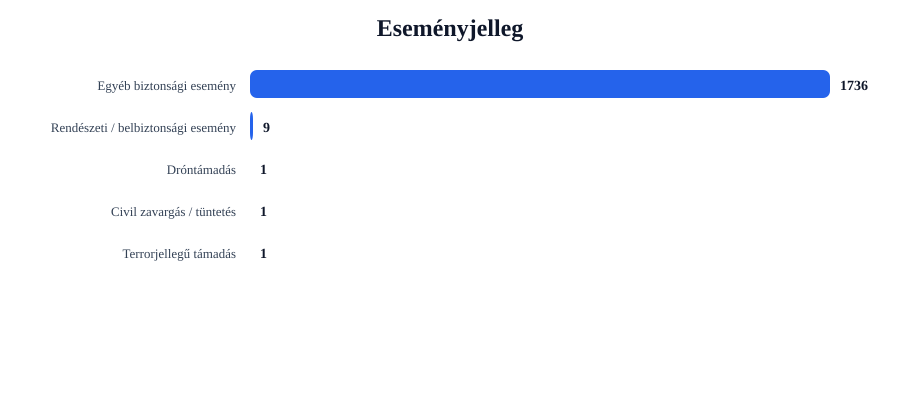

Rövid napi értékelés
Az incidensek száma emelkedett: +75 esemény, 4.5% növekedés.
A legtöbb találat ehhez az országhoz kapcsolódott: United States (649 esemény).
A legerősebb regionális súlypont: Egyéb térségek (1256 esemény).
A leggyakoribb részletes támadástípus: Fegyveres összecsapás (1176 találat).
A leggyakoribb eseményjelleg: Egyéb biztonsági esemény (1736 találat).
A drón-, terrorjellegű és háborús események felismerése kulcsszavas besorolással történik. Ez jó elemzési szűrő, de kézi ellenőrzést továbbra is igényelhet.
Régiós helyzetkép
Európai Unió
Azonosított események száma: 120. Leginkább érintett országok: Ireland (22), France (17), Italy (11).
Domináns támadástípusok: Fegyveres összecsapás (84), Rajtaütés / fegyveres támadás (35), Tömeges erőszak (1). Domináns eseményjelleg: Egyéb biztonsági esemény (120).
| Cím | Ország | Helyszín | Részletes típus | Eseményjelleg | Forrás |
|---|---|---|---|---|---|
| fight – Dublin, Dublin, Ireland | Ireland | Dublin, Dublin, Ireland | Fegyveres összecsapás | Egyéb biztonsági esemény | www.mercurynews.com |
| assault – Paris, France (general), France | France | Paris, France (general), France | Rajtaütés / fegyveres támadás | Egyéb biztonsági esemény | www.chch.com |
| fight – Paris, France (general), France | France | Paris, France (general), France | Fegyveres összecsapás | Egyéb biztonsági esemény | www.cairnspost.com.au |
| fight – Ireland | Ireland | Ireland | Fegyveres összecsapás | Egyéb biztonsági esemény | www.cairnspost.com.au |
| fight – France | France | France | Fegyveres összecsapás | Egyéb biztonsági esemény | www.marinij.com |
Ukrajna
Azonosított események száma: 34. Leginkább érintett országok: Ukraine (34).
Domináns támadástípusok: Robbantás / IED (24), Fegyveres összecsapás (5), Rajtaütés / fegyveres támadás (5). Domináns eseményjelleg: Egyéb biztonsági esemény (34).
| Cím | Ország | Helyszín | Részletes típus | Eseményjelleg | Forrás |
|---|---|---|---|---|---|
| fight – Komyshuvakha, Zaporiz'ka Oblast', Ukraine | Ukraine | Komyshuvakha, Zaporiz'ka Oblast', Ukraine | Robbantás / IED | Egyéb biztonsági esemény | www.nbcnews.com |
| fight – Dnipropetrovsk, Dnipropetrovs'ka Oblast', Ukraine | Ukraine | Dnipropetrovsk, Dnipropetrovs'ka Oblast', Ukraine | Robbantás / IED | Egyéb biztonsági esemény | www.rockymounttelegram.com |
| fight – Kherson, Khersons'ka Oblast', Ukraine | Ukraine | Kherson, Khersons'ka Oblast', Ukraine | Robbantás / IED | Egyéb biztonsági esemény | lasvegassun.com |
| fight – Kharkiv, Kharkivs'ka Oblast', Ukraine | Ukraine | Kharkiv, Kharkivs'ka Oblast', Ukraine | Robbantás / IED | Egyéb biztonsági esemény | www.themoscowtimes.com |
| fight – Luhansk, Luhans'ka Oblast', Ukraine | Ukraine | Luhansk, Luhans'ka Oblast', Ukraine | Robbantás / IED | Egyéb biztonsági esemény | www.sitkasentinel.com |
Balkán
Azonosított események száma: 20. Leginkább érintett országok: Turkey (11), Bosnia-Herzegovina (3), Serbia (3).
Domináns támadástípusok: Fegyveres összecsapás (14), Rajtaütés / fegyveres támadás (6). Domináns eseményjelleg: Egyéb biztonsági esemény (20).
| Cím | Ország | Helyszín | Részletes típus | Eseményjelleg | Forrás |
|---|---|---|---|---|---|
| fight – Afyonkarahisar, Afyonkarahisar, Turkey | Turkey | Afyonkarahisar, Afyonkarahisar, Turkey | Fegyveres összecsapás | Egyéb biztonsági esemény | www.arabnews.com |
| fight – Turkey | Turkey | Turkey | Fegyveres összecsapás | Egyéb biztonsági esemény | www.iefimerida.gr |
| fight – Kiyir, Afyonkarahisar, Turkey | Turkey | Kiyir, Afyonkarahisar, Turkey | Fegyveres összecsapás | Egyéb biztonsági esemény | www.arabnews.com |
| fight – Ankara, Ankara, Turkey | Turkey | Ankara, Ankara, Turkey | Fegyveres összecsapás | Egyéb biztonsági esemény | www.arabnews.com |
| fight – Istanbul, Istanbul, Turkey | Turkey | Istanbul, Istanbul, Turkey | Fegyveres összecsapás | Egyéb biztonsági esemény | newstodaynet.com |
Közel-Kelet
Azonosított események száma: 182. Leginkább érintett országok: Israel (25), Yemen (24), Iran (17).
Domináns támadástípusok: Fegyveres összecsapás (128), Rajtaütés / fegyveres támadás (45), Tömeges erőszak (8). Domináns eseményjelleg: Egyéb biztonsági esemény (181), Civil zavargás / tüntetés (1).
| Cím | Ország | Helyszín | Részletes típus | Eseményjelleg | Forrás |
|---|---|---|---|---|---|
| fight – Tehran, Tehran, Iran | Iran | Tehran, Tehran, Iran | Fegyveres összecsapás | Egyéb biztonsági esemény | www.wccbcharlotte.com |
| fight – Jerusalem, Israel (general), Israel | Israel | Jerusalem, Israel (general), Israel | Fegyveres összecsapás | Egyéb biztonsági esemény | home.nzcity.co.nz |
| fight – Israel | Israel | Israel | Fegyveres összecsapás | Egyéb biztonsági esemény | www.eurasiareview.com |
| fight – Gaza, Israel (general), Israel | Israel | Gaza, Israel (general), Israel | Fegyveres összecsapás | Egyéb biztonsági esemény | www.americamagazine.org |
| fight – Iran | Iran | Iran | Fegyveres összecsapás | Egyéb biztonsági esemény | www.kasu.org |
Kelet-Európa / orosz–ukrán térség
Azonosított események száma: 28. Leginkább érintett országok: Russia (26), Belarus (2).
Domináns támadástípusok: Robbantás / IED (19), Fegyveres összecsapás (6), Rajtaütés / fegyveres támadás (3). Domináns eseményjelleg: Egyéb biztonsági esemény (28).
| Cím | Ország | Helyszín | Részletes típus | Eseményjelleg | Forrás |
|---|---|---|---|---|---|
| fight – Ryazan, Ryazanskaya Oblast', Russia | Russia | Ryazan, Ryazanskaya Oblast', Russia | Robbantás / IED | Egyéb biztonsági esemény | www.rockymounttelegram.com |
| fight – Kakhovka, Amurskaya Oblast', Russia | Russia | Kakhovka, Amurskaya Oblast', Russia | Robbantás / IED | Egyéb biztonsági esemény | www.arabnews.com |
| assault – Rudnichny, Chelyabinskaya Oblast', Russia | Russia | Rudnichny, Chelyabinskaya Oblast', Russia | Robbantás / IED | Egyéb biztonsági esemény | english.pravda.ru |
| fight – Plesetsk, Arkhangel'skaya Oblast', Russia | Russia | Plesetsk, Arkhangel'skaya Oblast', Russia | Robbantás / IED | Egyéb biztonsági esemény | www.strategypage.com |
| fight – Yarovaya, Smolenskaya Oblast', Russia | Russia | Yarovaya, Smolenskaya Oblast', Russia | Robbantás / IED | Egyéb biztonsági esemény | www.christiandaily.com |
Európa – egyéb
Azonosított események száma: 108. Leginkább érintett országok: United Kingdom (95), Jersey (2), Oceans (2).
Domináns támadástípusok: Fegyveres összecsapás (69), Rajtaütés / fegyveres támadás (38), Tömeges erőszak (1). Domináns eseményjelleg: Egyéb biztonsági esemény (108).
| Cím | Ország | Helyszín | Részletes típus | Eseményjelleg | Forrás |
|---|---|---|---|---|---|
| assault – Southwark, Southwark, United Kingdom | United Kingdom | Southwark, Southwark, United Kingdom | Rajtaütés / fegyveres támadás | Egyéb biztonsági esemény | www.lbc.co.uk |
| assault – London, London, City of, United Kingdom | United Kingdom | London, London, City of, United Kingdom | Rajtaütés / fegyveres támadás | Egyéb biztonsági esemény | us105fm.com |
| assault – United Kingdom | United Kingdom | United Kingdom | Rajtaütés / fegyveres támadás | Egyéb biztonsági esemény | www.keighleynews.co.uk |
| fight – United Kingdom | United Kingdom | United Kingdom | Fegyveres összecsapás | Egyéb biztonsági esemény | www.tivysideadvertiser.co.uk |
| fight – London, London, City of, United Kingdom | United Kingdom | London, London, City of, United Kingdom | Fegyveres összecsapás | Egyéb biztonsági esemény | www.chipchick.com |
Egyéb térségek
Azonosított események száma: 1256. Leginkább érintett országok: United States (649), India (91), Nigeria (54).
Domináns támadástípusok: Fegyveres összecsapás (870), Rajtaütés / fegyveres támadás (360), Tömeges erőszak (10). Domináns eseményjelleg: Egyéb biztonsági esemény (1245), Rendészeti / belbiztonsági esemény (9), Dróntámadás (1).
| Cím | Ország | Helyszín | Részletes típus | Eseményjelleg | Forrás |
|---|---|---|---|---|---|
| fight – Unified School District, California, United States | United States | Unified School District, California, United States | Robbantás / IED | Terrorjellegű támadás | www.npr.org |
| fight – Los Alamitos, Aguascalientes, Mexico | Mexico | Los Alamitos, Aguascalientes, Mexico | Dróntámadás | Dróntámadás | www.sbsun.com |
| fight – Arizona, United States | United States | Arizona, United States | Fegyveres összecsapás | Egyéb biztonsági esemény | www.azfamily.com |
| assault – Florida, United States | United States | Florida, United States | Rajtaütés / fegyveres támadás | Egyéb biztonsági esemény | www.traverseticker.com |
| fight – South Carolina, United States | United States | South Carolina, United States | Fegyveres összecsapás | Egyéb biztonsági esemény | www.postandcourier.com |
Grafikonos áttekintés




Top 5 kiemelt esemény
| # | Cím | Ország | Helyszín | Részletes típus | Eseményjelleg | Súly | Forrás |
|---|---|---|---|---|---|---|---|
| 1 | fight – Unified School District, California, United States | United States | Unified School District, California, United States | Robbantás / IED | Terrorjellegű támadás | 26 | www.npr.org |
| 2 | fight – Komyshuvakha, Zaporiz'ka Oblast', Ukraine | Ukraine | Komyshuvakha, Zaporiz'ka Oblast', Ukraine | Robbantás / IED | Egyéb biztonsági esemény | 21 | www.nbcnews.com |
| 3 | fight – Dnipropetrovsk, Dnipropetrovs'ka Oblast', Ukraine | Ukraine | Dnipropetrovsk, Dnipropetrovs'ka Oblast', Ukraine | Robbantás / IED | Egyéb biztonsági esemény | 19 | www.rockymounttelegram.com |
| 4 | fight – Kherson, Khersons'ka Oblast', Ukraine | Ukraine | Kherson, Khersons'ka Oblast', Ukraine | Robbantás / IED | Egyéb biztonsági esemény | 18 | lasvegassun.com |
| 5 | fight – Kharkiv, Kharkivs'ka Oblast', Ukraine | Ukraine | Kharkiv, Kharkivs'ka Oblast', Ukraine | Robbantás / IED | Egyéb biztonsági esemény | 18 | www.themoscowtimes.com |
Napi bontások
Régiók
- Egyéb térségek1256
- Közel-Kelet182
- Európai Unió120
- Európa – egyéb108
- Ukrajna34
- Kelet-Európa / orosz–ukrán térség28
- Balkán20
Országok
- United States649
- United Kingdom95
- India91
- Nigeria54
- Pakistan44
- Australia40
- Canada35
- Ukraine34
- Russia26
- Israel25
Részletes típusok
- Fegyveres összecsapás1176
- Rajtaütés / fegyveres támadás492
- Robbantás / IED44
- Tömeges erőszak20
- Határincidens7
- Rendészeti / belbiztonsági incidens7
- Dróntámadás1
- Tüntetés / zavargás1
Eseményjelleg
- Egyéb biztonsági esemény1736
- Rendészeti / belbiztonsági esemény9
- Dróntámadás1
- Civil zavargás / tüntetés1
- Terrorjellegű támadás1
Források
- www.dailymail.com58
- www.riotimesonline.com30
- nypost.com27
- www.arabnews.com27
- www.hindustantimes.com25
- www.express.co.uk23
- www.aol.com22
- www.foxnews.com21
- aninews.in21
- www.moneycontrol.com20
Blogra használható intelligence card
Módszertani megjegyzés
Ez a jelentés nyílt forrású, automatizált adatgyűjtés alapján készül. A dróntámadások, terrorjellegű események és háborús cselekmények azonosítása kulcsszavas besorolással történik. Ez elemzési támpont, nem hivatalos minősítés.